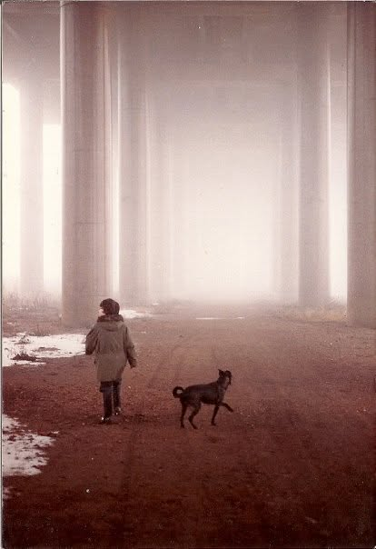

G. G. Gannon
Author

G. G. Gannon was born sometime between the 60s and the 80s, although they are unsure of the century.
Raised in the English Midlands, they have since lived all over Europe, befriending strays wherever they go. Quite often, these are cats.
They are interested in outsiders, unreliable memories and people who behave badly at parties.
Dreamers Are Welcome is their first novel.